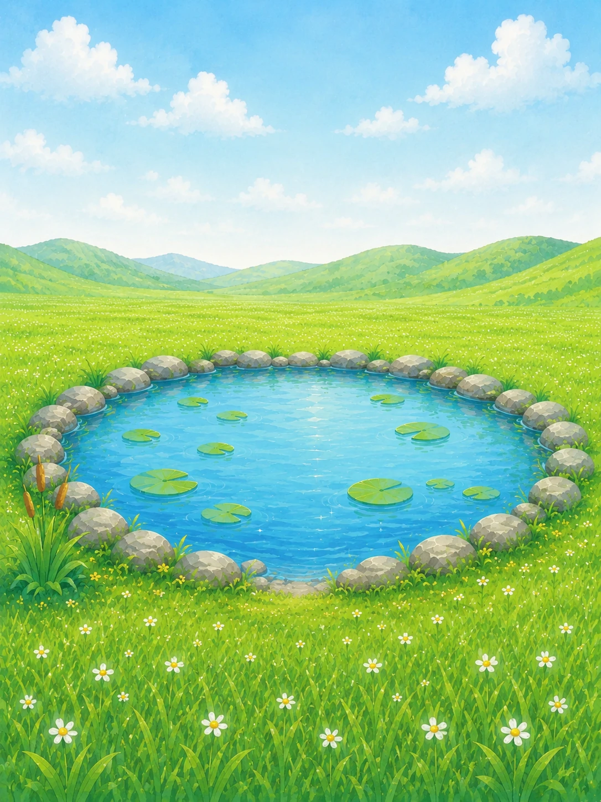

やさしい集中タイマー
集中時間、休憩時間、目標を自分のペースに合わせて設定。中断しても責めず、また始められる言葉で迎えます。
タイマーを始めると、アヒルも池のそばで静かに過ごします。 集中を終えるたびにパンくずが増え、池には草花や生き物が少しずつ訪れます。 勉強、仕事、読書など、毎日の「少しだけ進みたい」に寄り添う集中支援アプリです。
ログイン不要。集中記録や池の成長は端末内に保存されます。

25:00アヒルと一緒に、ここで少しだけ進もう。
数字を追い立てるのではなく、今日できた分だけ池の景色が豊かになります。
集中時間、休憩時間、目標を自分のペースに合わせて設定。中断しても責めず、また始められる言葉で迎えます。
卵から始まり、集中回数に合わせてアヒルと池が成長。季節や天気によって景色も静かに変化します。
池を訪れる鳥、蝶、トンボ、カエルを図鑑に記録。集めたパンくずで池の飾りや生き物と出会えます。
基本設定やプリセットから、今日取り組める時間を選びます。
雨音などの落ち着いた音と、池のそばで集中します。
集中を終えると記録とパンくずが少しずつ増えます。
アヒルが育ち、草花や生き物、思い出が増えていきます。
無料版の集中体験はそのままに、広告を外し、記録や音、季節、池の飾りをさらに楽しめる買い切り版を提供予定です。
FocusDuckは、日本語と英語を含む複数言語に対応して世界向けに公開予定です。
FocusDuckは現在、Google Playでの公開に向けて準備を進めています。 公開後、このページからストアへ移動できるように更新します。